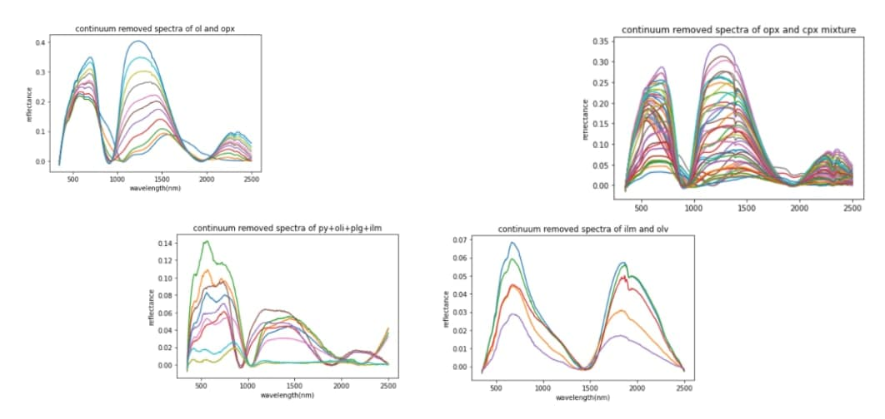

PROJECT REPORT
AUTOMATIC MINERAL DETECTION ON LUNAR SURFACE
BY INSHA M AND NIVEDITHA C V
(GROUP 5)
Under the guidance of Dr Guneshwar Thangjam and Dr Subhankar Mishra
For course CS460
CONTENTS
1 Introduction
2 Background study
3 Dataset
4 Methods:
(i) Experiment I
(ii) Experiment II
(iii) Experiment III
5 Future scope
6 Conclusion
7 Reference
INTRODUCTION
The reflectance spectra of a material contains information about its physical and chemical properties as it tells how the material interacts with light. In this project, we analyse the reflectance data obtained from the M3 (Moon Mineralogy Mapper) hyperspectral data of the Chandrayaan-I mission from the Von Karmen crater. Von Kármán is a large lunar impact crater that is located in the southern hemisphere on the far side of the Moon. The crater is about 180 km in diameter and lies within an immense impact crater of roughly 2,500 km in diameter and 13 km deep.
The radiance spectra we observe from the hyperspectral data has the reflectance measured by the sensors of all the materials within its field of view and so contains the spectral feature of the mixture. Our goal is to identify the minerals contributing to the mixed spectra. The major minerals that we are interested in are pyroxene, plagioclase, olivine, spinel, ilmenite and their mixtures.
To identify them, we are using classification methods to classify spectrum into its absorption feature classes using machine learning algorithms. The mineral classification will be done using ML KNN and SVM. Using this, we were able to identify the various mineral classes present in the reflectance spectra.
BACKGROUND STUDY:
Although mineral detection wasn't done using machine learning algorithms much in the past, we were still able to find some related papers on multi label classification done on minerals.
(i) Vision based metal spectral analysis using multi-label classification.
Eranga Ukwatta et al.(2009) DOI: https://doi.org/10.1109/CRV.2009.42
Using computer vision and machine learning techniques on LIBS spectra, presented an in situ fully automatic method for detecting constituent elements in a sample specimen.
Unlike the traditional classification problems where classes are mutually exclusive, in spectral analysis a spectrum could contain emissions from multiple elements such that the disjointness of the labels is no longer valid. Here they casted the metal detection problem as a multi-label classification and thus enabling detection of elemental composition of the specimen. They applied both SVM and ANN to multiple metal classification and compared the performance and found that both machine learning approaches yield correct identification of metals to an accuracy of 99%.
For SVM they used a one-vs-rest classification approach i.e, they decomposed the problem into a set of binary classification problems and developed a classifier for each class which considers each training sample as positive to which it belongs and as negative to all others. The main advantage of SVM that was considered in the paper is that the classifier complexity was seen as the property of the support vectors and not the dimension of transformed space.
For ANN one output node per class was chosen for the multi label classification.Multi-layer perceptron with one hidden layer was considered. Limitations found include insufficient frequency response and non-uniform quantum efficiency characteristic of the camera used.Accurate elemental analysis is not required but rather a qualitative analysis.
(ii)Multi-label classification for drill-core hyperspectral mineral mapping.
I. C. Contreras et al.(2020) DOI: https://doi.org/10.5194/isprs-archives-XLIII-B3-2020-383-2020
A multi-label classification concept is introduced for the mineral mapping task in drill-core hyperspectral data analysis using machine learning algorithms.
For generating the training set they used SEM-MLA data, which provides high-resolution mineralogical analysis For the multi-label classification, Classifier Chain method (CC) is implemented using the Random Forest (RF) algorithm as the base classifier. The quantitative and qualitative analysis of the obtained results shows that the multi-label classification approach provides meaningful and descriptive mineral maps and outperforms the single-label RF classification for the mineral mapping task.
(iii)Intelligent Identification for Rock-Mineral Microscopic Images Using Ensemble Machine Learning Algorithms
Ye Zhang et al.(2019), DOI: https://doi.org/10.3390/s19183914
Here many ML algorithms are compared including logistic regression (LR), support vector machine (SVM), random forest (RF), k-nearest neighbors (KNN), multilayer perceptron (MLP), and gaussian naïve Bayes (GNB). The results are evaluated using 10-fold cross-validation. Results showed LR, SVM, and MLP have a significant performance among all the models, with accuracy of about 90.0%. The three models are also selected as the base models in model stacking. The stacking model can achieve 90.9% accuracy, which is higher than all the single models. The result also shows that model stacking effectively improves model performance.
(iv)A survey on machine learning in chemical spectral analysis.
Dongfang Yu et al.(2020) DOI: https://www.techscience.com/jihpp/v2n4/41148
Chemical spectral analysis is contemporarily undergoing a revolution and drawing much attention of scientists owing to machine learning algorithms, in
particular convolutional networks.
This paper outlines the major machine learning methods that contributed to interpreting chemical images, and overviews the current application, development and breakthrough in different spectral characterization. Overview of existing circumstances in this research area, they provided unique insight and promising directions for the chemical imaging field to fully couple machine learning subsequently.
(v) Lunar terrain and mineral’s abundance automatic analysis.
Qinghua Su et al.(2014), DOI: http://dx.doi.org/10.1016%2Fj.ijleo.2013.08.022
The main objective of this work is to detect lunar craters with the multi-information fuzzy logic method, and to quantify the image’s terrain and the abundance of lunar surface minerals based on crater distribution law and soil characterization consortium data set with lunar surface reflectance. We implement image processing to recognize lunar crater and analysis lunar terrain;
They used the lunar reflectance model to solve the mineral reflectance question and thus calculated the minerals reflectance, region reflectance, and then estimated the abundance of lunar surface soil minerals.
DATASET:
The dataset that we are using is measured by the Moon Mineralogy Mapper image spectrometer onboard the Chandrayaan-1 Mission. The spectral range of this is 430nm to 3000nm with 10 nm spectral sampling and a 24-degree field of view. The dataset we are taking is Level 2 corrected i.e the raw data is processed with corrections, removing the thermal emission, photometric correction and ground truth correction.
For training and testing our data, we acquired the necessary data from RELAB and PDS spectral data from Mineral and Rock Sample Database obtained from Centre For Terrestrial and Planetary Exploration (C-TAPE). We have also taken relab data from the PDS Geosciences Node Spectral Library and USGS Spectroscopy Lab.
METHODS:
We are doing three experiments on automatic mineral detection:
(i) Comparing the various machine learning algorithms.
(ii) Classification using Multi Label KNN algorithm
(iii) Improvement using ensemble learning method.
EXPERIMENT I:
Aim: Comparing the various machine learning algorithms: SVM, ML-KNN, and Random forest on spectra of orthopyroxene, clinopyroxene, and olivine
First reflectance spectra of M-3 hyperspectral data was plotted. For training and testing our data, we acquired the necessary data from RELAB and PDS spectral data from Mineral and Rock Sample Database obtained from Centre For Terrestrial and Planetary Exploration (C-TAPE). We took the sample database for:
(i) spectral data for the mixture of orthopyroxene and clinopyroxene.
(ii) spectral data for the mixture of orthopyroxene and olivine.
(iii) pure spectral data of olivine.
(iv)pure spectral data of orthopyroxene.
(v) pure spectral data of clinopyroxene.
We converted the data into .xlsx format.
We then did the experiment using the four dataset above and compared the accuracy results obtained via the three machine learning algorithms.
Data preprocessing:
· Data cleaning was done. We found and deleted the rows and columns with missing data.
· We also made sure no duplicated data was found and the noisy data were also cleared.
· As for our dataset, we considered one of the important properties. the viewing geometry, and only those with viewing geometry of 30 degree were considered.
· We also made sure that the data of the same wavelengths are being taken and compared. And that the range between the wavelengths noted are the same.
· We then proceeded with the data transformation. This included normalization of the data, and that was done by continuum removal.
The spectra after continuum removal is as shown below:

Feature Engineering:
· Feature engineering includes Pre-processing of existing features,adding new features, and selecting the best features or combination of features based on feature importance.
· Feature selection was done by plotting the number of components vs variance, using the Principal Component Analysis(PCA) technique. The resulting data frame was saved.
We then applied some machine learning algorithms on this data and compared the F1 score and the accuracy score among them. The machine learning algorithms applied were SVM, ML-KNN, and Random Forest algorithm. The observations obtained are as given below:
|
Classes |
SVM |
ML - KNN |
Random Forest |
|
F1-score of: Olivine Orthopyroxene Clinopyroxene |
0.80 0.92 0.98 |
0.89 0.97 0.86 |
0.36 0.86 0.69 |
|
Accuracy Score |
0.8823529411764706 |
0.8095238095238095 |
0.8571428571428571 |
Experiment results:
· Feature selection using PCA which reduced the features, gave good results.
· All the three machine learning algorithms gave satisfactory results and thus proved machine learning techniques can be used to solve the mineral classification problem.
EXPERIMENT II:
Aim: Classification of the mineral classes from the spectra using Multi Label KNN algorithm
We had done a small sample experiment on three minerals orthopyroxene, clinopyroxene, and olivine using three machine learning algorithms SVM, Random forest and ML-KNN and compared the algorithms. We found that applying these machine learning algorithms were successful. Hence using ML-KNN, we have determined the automatic mineral detection on moon using hyperspectral data from Moon Mineralogy Mapper (M3)
Data collection:
For training and testing our data, we acquired the necessary data from RELAB and PDS spectral data from Mineral and Rock Sample Database obtained from Centre For Terrestrial and Planetary Exploration (C-TAPE). We have also taken relab data from the PDS Geosciences Node Spectral Library and USGS Spectroscopy Lab
We have used the RELAB 2017 data.
We took the sample database for:
(i) spectral data for the mixture of orthopyroxene and clinopyroxene.
(ii) spectral data for the mixture of orthopyroxene and olivine.
(iii) pure spectral data of olivine.
(iv) pure spectral data of plagioclase
(vi)pure spectral data of orthopyroxene.
(v) pure spectral data of clinopyroxene.
(v) pure spectral data of ilmenite.
(vi) pure spectral data of spinel.
We then did data preprocessing and feature engineering the same way we did above.
Some of the baseline removal spectra obtained are as follows:
2222222222222222222222
 On doing the experiment using
ML-KNN to classify them using multi label classification method, we got the
observations as shown: 33333333333333333333333333333 We got the accuracy score of the ML-KNN algorithm as
0.8695652173913043 As an example, here we show how we classified the
following spectra to its constituent mineral classes using our ML algorithm:
The mineral classes we got are: Ilmenite and Pyroxene.
It contains 500 pixels with resolution 140m/pixel. Experiment results: ·
We
find that the classification using ML-KNN gives a good accuracy score. ·
Classification
of the spectra to different mineral classes ie; classes of pyroxene, olivine,
plagioclase, spinel, and ilmenite were done successfully. EXPERIMENT III: Aim: Improvement in the Classification using
Voting classifier: Ensemble method Ensemble learning is where we are combining two or more
algorithms so that we could improve or boost the performance. A
Voting Classifier is a machine learning model that trains on an ensemble of
numerous models and predicts an output (class) based on their highest probability
of chosen class as the output. It simply aggregates the findings of
each classifier passed into Voting Classifier and predicts the output class
based on the highest majority of voting. The idea is instead of creating
separate dedicated models and finding the accuracy for each of them, we create
a single model which trains by these models and predicts output based on their
combined majority of voting for each output class. So now, we combine two machine
learning algorithms: ML-KNN and SVM to do the ensembling. We then
targetted the combined algorithm on each mineral classes and
observed the accuracy obtained. Experiment results:
·
We
find that the accuracy score has increased on doing the ensembling method ·
Hence,
ensembling method works better for this mineral classification FUTURE
SCOPES: Mineral detection of lunar surface is
done now. This can be used for further studies on the lunar surface as knowing
the mineral composition makes it a lot easier. Because, Mineralogy of the Lunar
surface provides important clues for understanding the composition and
evolution of the lunar surface. • Detection of minerals will
help in analyzing the relationship between these geological, physical and
chemical information. • Only qualitative analysis is done
by us. Quantitative analysis might be also possible using machine learning
algorithms for finding the exact composition of the minerals found. This can be
like a new area to study too and the fact that all the minerals present are
already detected can be very useful there. CONCLUSION: A machine learning algorithm, ML-KNN
for the detection of the major minerals found on the lunar surface ilmenite,
olivine, plagioclase, pyroxene and spinel was performed. Qualitative analysis was thus
performed successfully. As an improvement on the existing
algorithm, ensembling method was also done. An Ensembling method: Voting
classifier, was found to increase the accuracy of the results. REFERENCES: (i) Su, Q., Zhao, Y.,
Yang, K., & Zhang, S. (2014). Lunar terrain and mineral’s abundance
automatic analysis. Optik - International Journal for Light and Electron
Optics, 125(3), 1278–1282. doi:10.1016/j.ijleo.2013.08.022 (ii)Yu, D., & Wang, J. (2020). A survey on
machine learning in chemical spectral analysis. Journal of Information Hiding
and Privacy Protection, 2(4), 165-174.
doi:http://dx.doi.org/10.32604/jihpp.2020.010466 (iii) Zhang, Y., Li, M.,
Han, S., Ren, Q., & Shi, J. (2019). Intelligent Identification for Rock-Mineral
Microscopic Images Using Ensemble Machine Learning Algorithms. Sensors, 19(18),
3914. doi:10.3390/s19183914 (iv) Vision based metal spectral analysis using
multi-label classification. Eranga Ukwatta et al.(2009) DOI:
https://doi.org/10.1109/CRV.2009.42 (v)Multi-label classification for drill-core hyperspectral
mineral mapping. I. C. Contreras et al.(2020) DOI:
https://doi.org/10.5194/isprs-archives-XLIII-B3-2020-383-2020 (vi)Aaron E. Maxwell, Timothy A. Warner & Fang Fang (2018)
Implementation of machine-learning classification in remote sensing: an applied
review, International Journal of Remote Sensing, 39:9, 2784-2817, DOI:
10.1080/01431161.2018.1433343 (vii)R. O. Green et al.(2011)The Moon Mineralogy Mapper (M3)
imaging spectrometer for lunar science: Instrument description, calibration,
on‐orbit measurements, science data calibration and on‐orbit
validation,doi:10.1029/2011JE003797 (viii)Julien Maitre, Kévin Bouchard, L. Paul Bédard(2019) Mineral
grains recognition using computer vision and machine learning, Computers &
Geosciences, Volume 130,2019, Pages 84-93, ISSN 0098-3004,